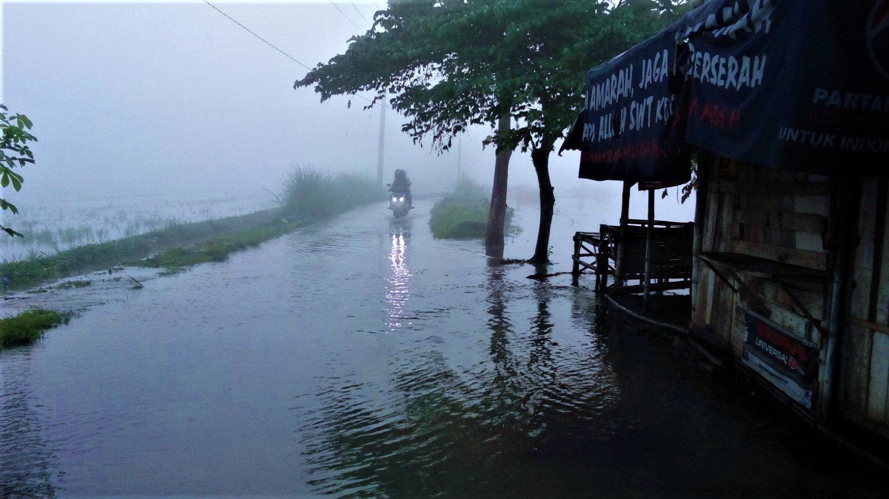

Penyebab Banjir

Penyebab lainnya juga dapat karena air sungai yang meluap, karena tidak lancar saluran pembuangan air sehingga menyebabkan air sungai tidak mengalir dengan baik dan menjadi meluap keluar. Saluran air tidak lancar karena saluran tersebut tersumbat oleh sampah-sampah, sehingga bila curah hujan cukup tinggi dan dalam jangka waktu yang lama, seringkali menyebabkan banjir akibat luapan air sungai akibat ke tidak pedulian masyarakat terhadap kebersihan lingkungan.
Penebangan hutan secara liar tanpa memikirkan dampak akibat kerusakan hutan dapat menyebabkan banjir. Hutan pada dasarnya berfungsi sebagai daerah resapan air, menyimpan air hujan kemudian mengalirkan kepada manusia melalui bentuk air tanah. Bila hutan terus ditebangi secara liar akan menimbulkan banjir bagi kawasan daerah tersebut, dengan banjir yang terus terjadi dengan skala besar maka ada kemungkin menyebabkan tanah longsor.
Jadi seharusnya semua orang menjaga lingkungan agar tidak menghadirkan bencana bagi banyak orang dan diri sendiri tentunya. Memulai dari hal kecil yang paling sederhana seperti tidak membuang sampah sembarangan dan membersihkan lingkungan tempat tinggal.
Share


Ikuti Kami